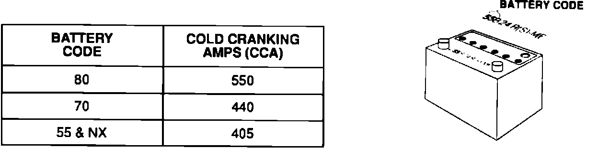
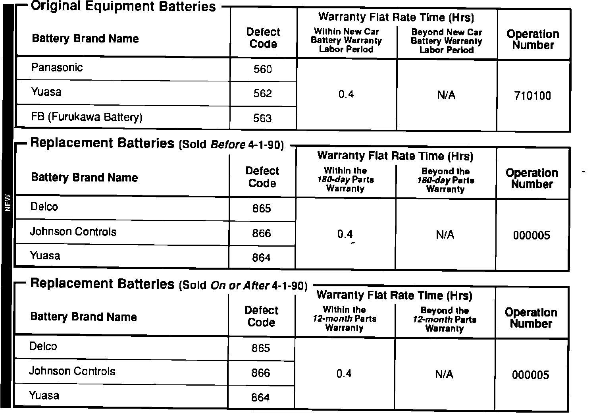

Battery - Procedure For Test
90acura01YEARS MODEL VIN APPLICATION
ALL ALL ALL
June 11, 1990
BULLETIN NO.
88-016
Battery Test Procedure (Supersedes Service Bulletin 88-016, dated NOVEMBER 24, 1989)
American Honda will process claims for battery replacement under warranty only if one of the required battery testers listed below is used.
TEST EQUIPMENT REQUIRED
12V battery charger with a fast charge capability of 40A minimum.
Battery Tester: Use either
- Johnson Controls Inc. (JCI) Battery Tester model # 42-253, or
- Bear A.R.B.S.T. Electrical System Tester model # 42-210.
NOTE: See Service Bulletin 89-037 for ordering information and equipment testing capabilities/specifications.
TEST PROCEDURE
[WARNING] Battery fluid (electrolyte) contains sulfuric acid. It may cause severe burns If it gets on your skin or In your eyes. Wear protective clothing and a face shield.
- If electrolyte gets on your skin or clothes, rinse it off with water immediately.
- If electrolyte gets in your eyes, flush it out by splashing water in your eyes for at least 15 minutes; call a physician immediately.
^ A battery gives off hydrogen gas. If ignited, the hydrogen will explode and could crack the battery case and splatter acid on you. Keep sparks, flames, and cigarettes away from the battery.
^ Overcharging will raise the temperature of the electrolyte. This may force electrolyte to spray out of the battery vents. Follow the charger manufacturer's instructions and charge the battery at a proper rate.
1. Follow the instructions provided with the battery tester.

2. Use the following chart to determine the cold cranking amps (CCA) rating. The CCA rating is needed as input data for the battery tester.
NOTE: Some batteries will have the CCA printed on top of them.
3. If test results indicate that the battery needs to be charged, charge the battery on the high setting (40 amps) until the "EYE" indicates a full charge. Then charge an additional 30 minutes to assure a full charge.
NOTE: If the battery charge is very low, it may be necessary to bypass the charger's polarity protection circuitry.
4. After charging, test again.
5. If the test results indicate that the battery is "BAD," then record the voltage displayed at the end of the test on the hard copy of the repair order.

WARRANTY CLAIM INFORMATION
NOTE: The correct Defect Code for the FAILED BATTERY BRAND must be entered, or the claim will be rejected. DO NOT enter the Defect Code for the new replacement battery. The Warranty Claim Chart lists the ONLY Defect Codes that can be used for a battery claim.
This repair, like any repair performed after warranty expiration, may be eligible for goodwill consideration by the District Service Manager. You must request consideration, and get the DSM's decision, before starting work. Use the following claim information if DSM approval is received.
NOTE: If the battery fails the test, the technician must record the voltage reading displayed at the end of the test cycle on the Warranty R.O. hard copy.
IMPORTANTEffective February 15, 1990 the fields for voltage readings on the Honda Net Warranty Claim can be by-passed. The ending voltage reading must still be retained in the dealership's customer file for warranty verification.